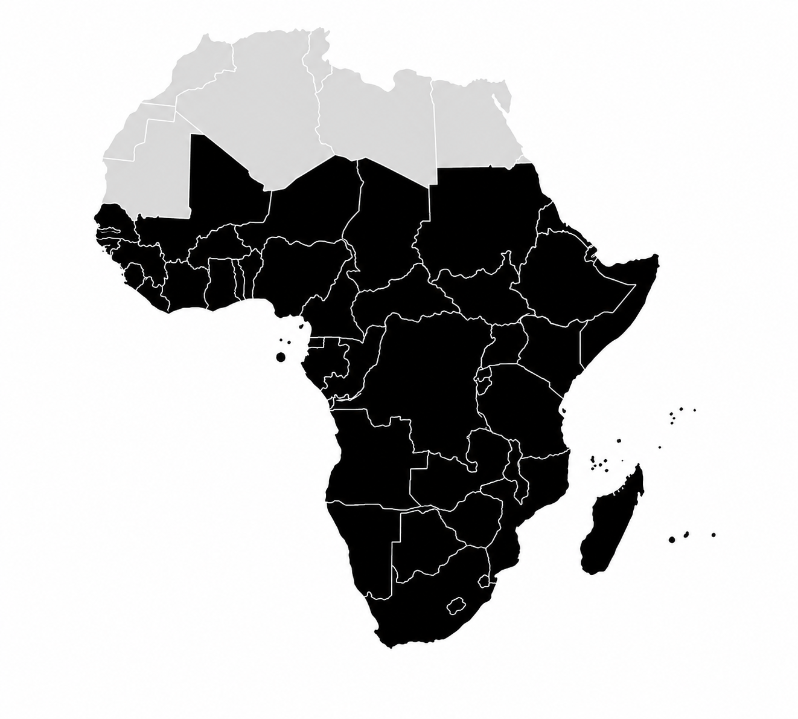
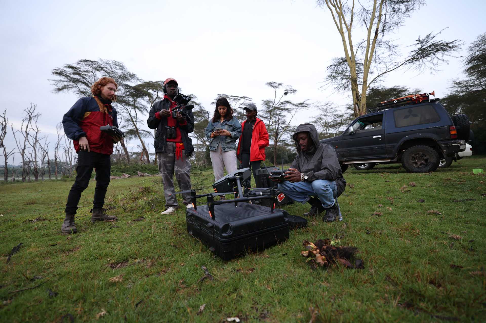

Following our impact film on instagram for updates on its upcoming release!
@birdsbeyondbordersfilmFor thousands of years, house martins have built their intricate mud nests on the sides of our homes, creating a lasting connection between people and the natural world. Yet despite living so closely alongside us, we know remarkably little about their winter ecology during their migration to Africa.
Birds Beyond Borders is a research project seeking to unlock the mysteries of house martin migration while also exploring the relationship humans share with these birds on a global scale.
The project also aims to better understand the sharp declines seen across parts of their breeding range, particularly in the United Kingdom and Western Europe, to help inform future conservation efforts. Today, house martins have become important indicators of our changing climate and the health of the wider global ecosystem.

